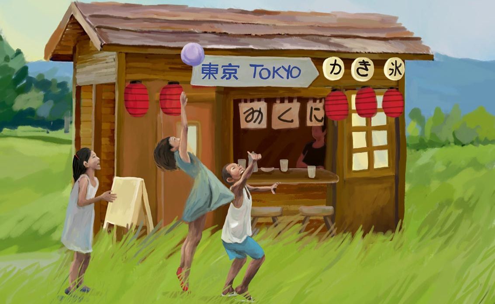

Tokyo Market (Japan Touch)
6 septembre 2025
Le club proposera des parties d'initiation au jardin Compans Cafarelli le samedi 6 septembre à partir de 11h.
Venez découvrir le mahjong japonais et rencontrer les membres du club !
Le club proposera des parties d'initiation au jardin Compans Cafarelli le samedi 6 septembre à partir de 11h.
Venez découvrir le mahjong japonais et rencontrer les membres du club !